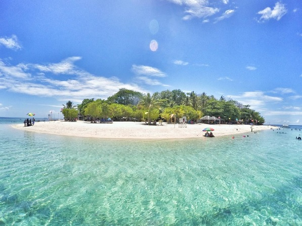

Island hopping in Leyte offers an exciting way to explore the region’s stunning coastal landscapes, from pristine sandbars to vibrant marine sanctuaries. With multiple islands just a short boat ride away, visitors can experience a mix of adventure, relaxation, and breathtaking scenery all in a single trip.

Island hopping in Leyte offers an exciting way to explore the region’s stunning coastal landscapes, from pristine sandbars to vibrant marine sanctuaries. With multiple islands just a short boat ride away, visitors can experience a mix of adventure, relaxation, and breathtaking scenery all in a single trip.
One of the best ways to experience Leyte’s coastal beauty is through island hopping, where travelers can visit multiple destinations such as Kalanggaman Island and Canigao Island in one journey. Each island offers its own unique charm—Kalanggaman with its iconic sandbars and wide open shoreline, and Canigao with its coral-rich waters perfect for snorkeling. These trips often include stops for swimming, sightseeing, and beach picnics.

Island hopping is accessible from several coastal towns in Leyte.
Tours often include swimming, snorkeling, and beach picnics.
It is one of the best ways to explore multiple destinations in a single trip.